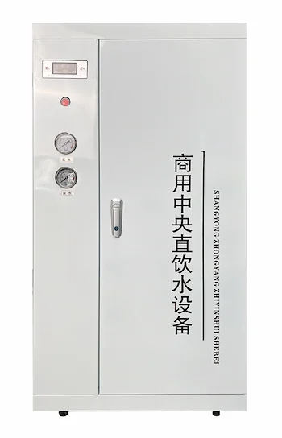

Commercial Mid-Cabinet RO Water Purifier with Built-In Pressure Tank 400G-1600G
Related for selection · verify before ordering. This RO unit specifies 0.1–0.4 MPa at its inlet. Compare the valve’s outlet setting with that range and size both connections.